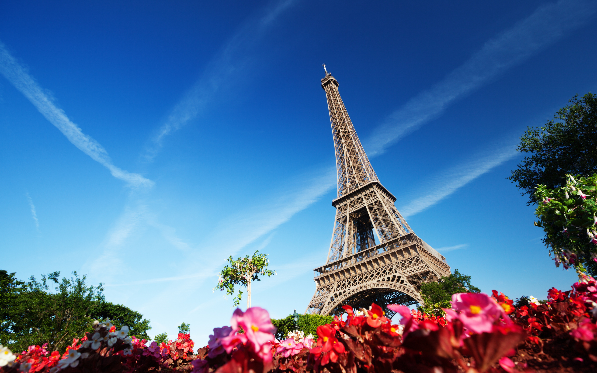
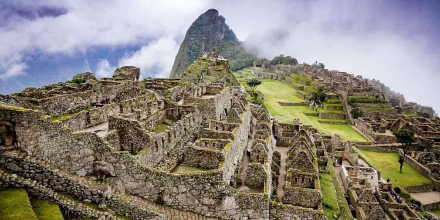
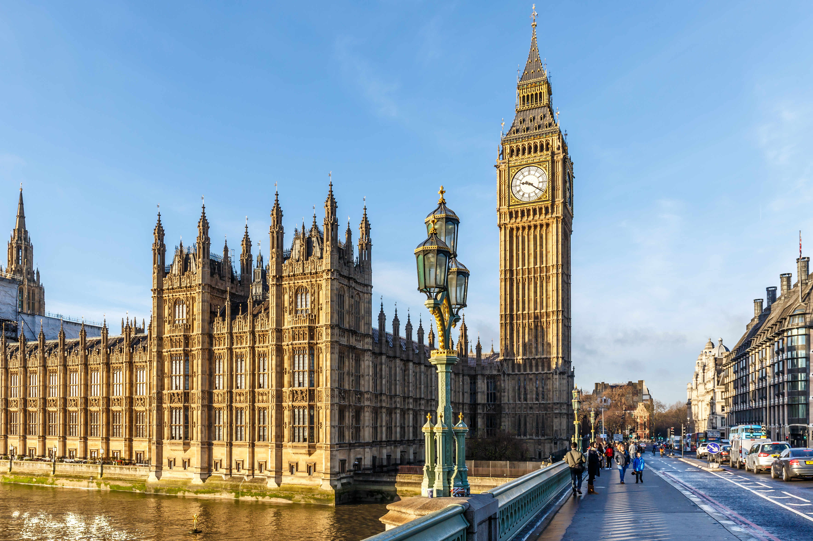

Travel to live, Live to Travel
Travel to live, Live to Travel

The Eiffel Tower is a wrought iron lattice tower on the Champ de Mars in Paris, France. It is named after the engineer Gustave Eiffel, whose company designed and built the tower.The tower has three levels for visitors, with restaurants on the first and second levels. The top level's upper platform is 276 m (906 ft) above the ground – the highest observation deck accessible to the public in the European Union. Tickets can be purchased to ascend by stairs or lift to the first and second levels. The climb from ground level to the first level is over 300 steps, as is the climb from the first level to the second. Although there
is a staircase to the top
level, it is usually accessible only by lift
.

The Leaning Tower of Pisa is the campanile, or freestanding bell tower, of the cathedral of the Italian city of Pisa, known worldwide for its unintended tilt. The tower is situated behind the Pisa Cathedral and is the third oldest structure in the city's Cathedral Square (Piazza del Duomo), after the cathedral and the Pisa Baptistry.The tower's tilt began during construction in the 12th century, caused by an inadequate foundation on ground too soft on one side to properly support the structure's weight. The tilt increased in the decades before the structure was completed in the 14th century. It gradually increased until the structure was stabilized (and
the tilt partially corrected) by
efforts in the late 20th and early 21st centuries
.

Machu Picchu is a 15th-century Inca citadel situated on a mountain ridge 2,430 metres (7,970 ft) above sea level.[11][12] It is located in the Cusco Region, Urubamba Province, Machupicchu District in Peru,[13] above the Sacred Valley, which is 80 kilometres (50 mi) northwest of Cuzco and through which the Urubamba River flows.Machu Picchu was declared a Peruvian Historic Sanctuary in 1981 and a UNESCO World Heritage Site in 1983.[12] In 2007, Machu Picchu was voted
one of the New Seven
Wonders of the World in a worldwide Internet poll
.

The Taj Mahal is an ivory-white marble mausoleum on the south bank of the Yamuna river in the Indian city of Agra. It was commissioned in 1632 by the Mughal emperor, Shah Jahan (reigned from 1628 to 1658), to house the tomb of his favourite wife, Mumtaz Mahal. The tomb is the centrepiece of a 17-hectare (42-acre)[5] complex, which includes a mosque and a guest house, and is set in formal gardens bounded on three sides by a crenellated wall.It is regarded by many as the best example of Mughal architecture and a symbol of India's rich history. The Taj Mahal attracts 7–8 million visitors a year. In
2007, it was declared a
winner of the New7Wonders of the World (2000–2007) initiative
.

Big Ben is the nickname for the Great Bell of the clock at the north end of the Palace of Westminster in London[1] and is usually extended to refer to both the clock and the clock tower.[2][3] The official name of the tower in which Big Ben is located was originally the Clock Tower, but it was renamed Elizabeth Tower in 2012 to mark the Diamond Jubilee of Elizabeth II.The tower is a British cultural icon recognised all over the world. It is one of the most prominent symbols of the United Kingdom and parliamentary democracy,[6] and it is often used in the establishing shot of films set in London.[7] The clock tower has been part of a
Grade I listed building since
1970 and a UNESCO World Heritage Site since 1987
.

The Great Pyramid of Giza (also known as the Pyramid of Khufu or the Pyramid of Cheops) is the oldest and largest of the three pyramids in the Giza pyramid complex bordering what is now El Giza, Egypt. It is the oldest of the Seven Wonders of the Ancient World, and the only one to remain largely intact.There are three known chambers inside the Great Pyramid. The lowest chamber is cut into the bedrock upon which the pyramid was built and was unfinished. The so-called[1] Queen's Chamber and King's Chamber are higher up within the pyramid structure. The main part of the Giza complex is a set of buildings that included two mortuary temples in honour of Khufu (one close to the pyramid and one near the Nile), three smaller pyramids for Khufu's wives, an even smaller "satellite" pyramid, a raised
causeway connecting the two temples,
and small mastaba tombs surrounding the pyramid for nobles
.

he Great Wall of China is a series of fortifications made of stone, brick, tamped earth, wood, and other materials, generally built along an east-to-west line across the historical northern borders of China to protect the Chinese states and empires against the raids and invasions of the various nomadic groups of the Eurasian Steppe with an eye to expansion. Several walls were being built as early as the 7th century BC;[2] these, later joined together and made bigger and stronger, are collectively referred to as the Great Wall.[3] Especially famous is the wall built in 220–206 BC by Qin Shi Huang, the first Emperor of China. Little of that wall remains. The Great Wall has been rebuilt, maintained, and enhanced over various dynasties; the majority of the existing wall is from the Ming Dynasty (1368–1644).Today, the Great Wall
is generally recognized as one
of the most impressive architectural feats in history.
.